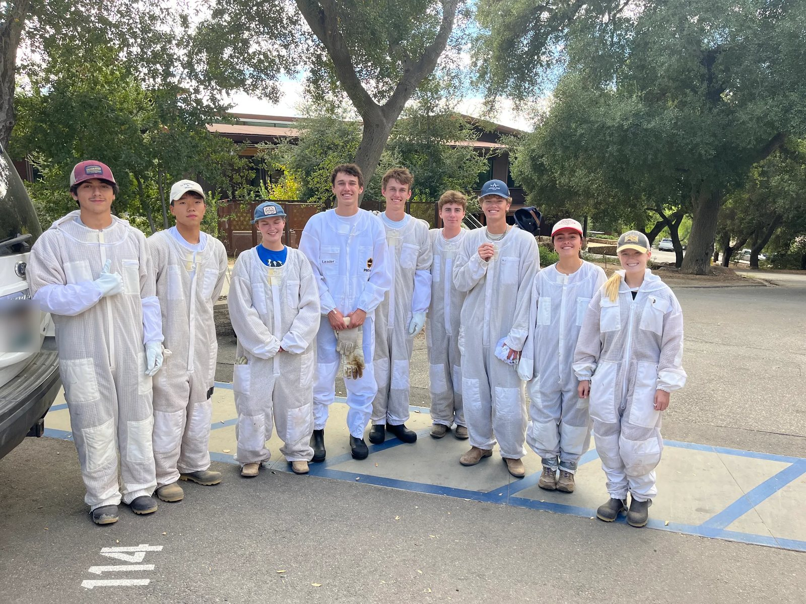
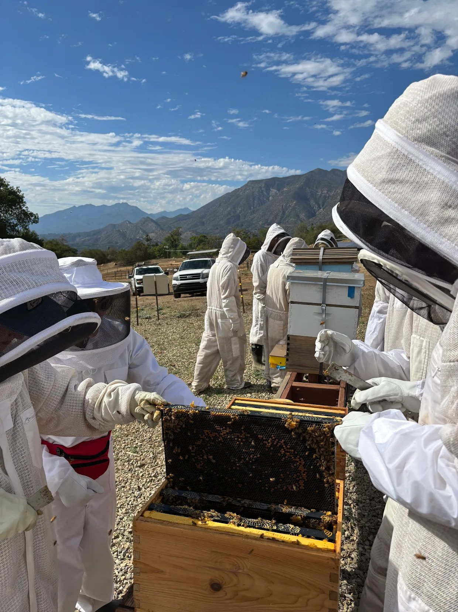
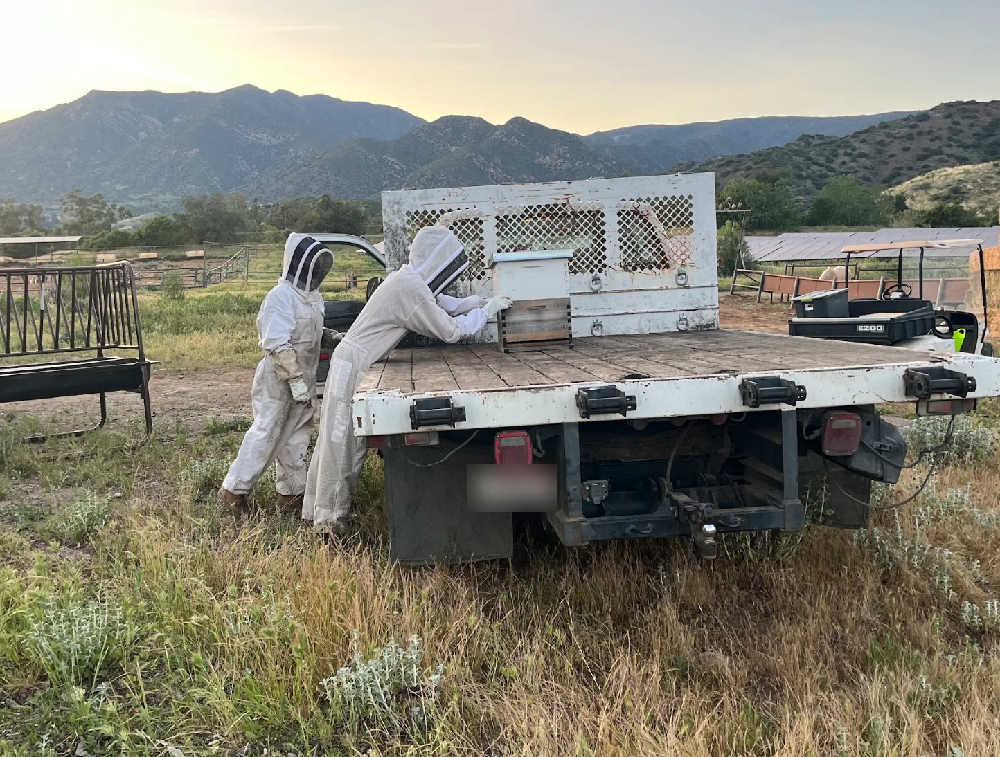
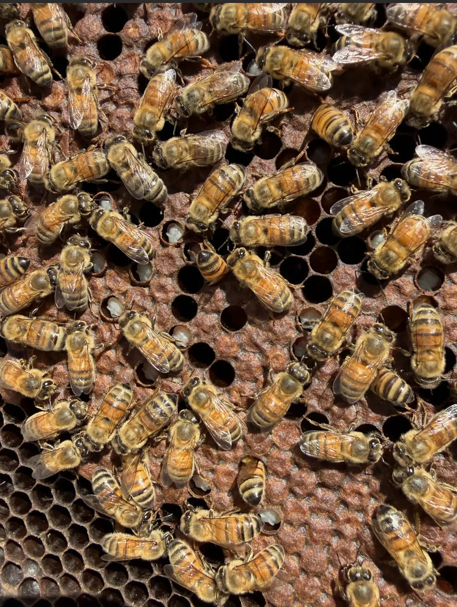

Beekeeping
Beekeeping
I started keeping bees in my sophomore year at Thacher, when I was selected for the school's beekeeping class.
We began with six hives on campus. Later we moved across the road and started working with a commercial beekeeper who runs more than 100 hives, which showed me what beekeeping looks like at scale.
What keeps me interested is how directly my actions show up in the colony. Every time I open a hive, I'm stepping into a system the bees run on their own terms, and what I do there changes how they live. That raises a question I keep coming back to: when should a beekeeper intervene, and when is it better to leave the colony alone?
Photos



